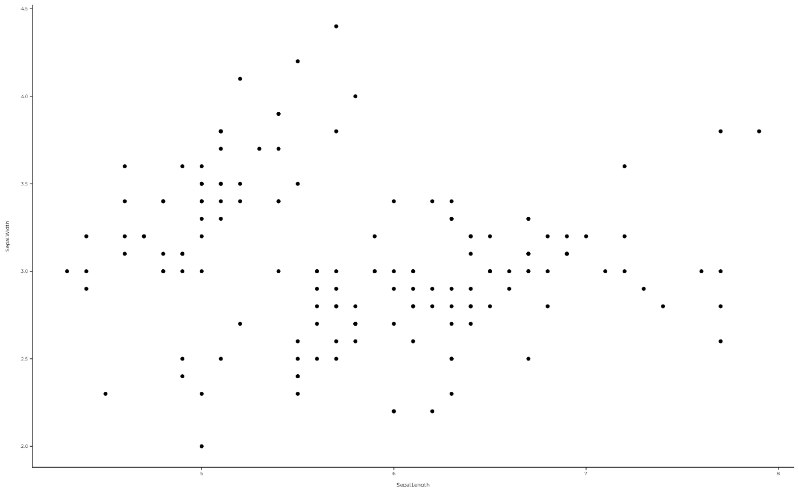

Ported from the aphantasiaEmotions package so that figures across the
two packages share one visual identity. Based on the guidelines from the
Nature Branded Research Journals:
7pt base text, everything else smaller, sized to look right at 88mm (one
column) or 180mm (two columns) rather than on screen. Custom Google Fonts
are built in, the default being "Montserrat"; if the font cannot be
fetched the theme silently falls back to the default sans font.
Note the base size. inst/scripts figures are vector PDFs sized in mm,
so base_size = 7 is correct there. Figures built for the pkgdown site
are raster and much larger on screen, and use base_size = 16.
Usage
theme_pdf(
base_theme = ggplot2::theme_classic,
family = "Montserrat",
base_size = 7,
base_line = 0.2,
title_hjust = 0.5,
axis_relative_size = 0.85,
axis_relative_x = 1,
axis_relative_y = 1,
legend_relative = 1,
...
)Arguments
- base_theme
A ggplot2 theme function, without parentheses or quotes. The default is
ggplot2::theme_classic.- family
A string with the name of the font family to be used in the theme. If not found by
sysfonts::font_add_google(), the font will reset to the default "sans" font (close to Arial).- base_size
A numeric value for the base font size in points. The default is 7pt, as recommended by the NRJ.
- base_line
A numeric value for the base line size in points. The default is 0.2pt to look good in small vector figures.
- title_hjust
A numeric value for the horizontal justification of the plot title and subtitle. The default is 0.5, which centers the title.
- axis_relative_size
A numeric value for the relative size of the axis text compared to the base size. The default is 0.85.
- axis_relative_x, axis_relative_y
A numeric value for the relative size of the x/y-axis text compared to the axis text size. The defaults are 1.
- legend_relative
A numeric value for the relative size of the legend text compared to the base size. The default is 1.
- ...
Additional arguments passed to
ggplot2::theme()(which can override the defaults set here).
Examples
if (requireNamespace("ggplot2", quietly = TRUE)) {
ggplot2::ggplot(iris, ggplot2::aes(Sepal.Length, Sepal.Width)) +
ggplot2::geom_point() +
theme_pdf()
}
